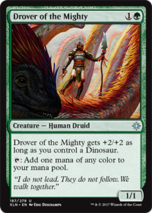
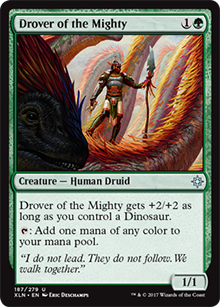

On March 22, Wizards of the Coast announced a new format based on Commander: Brawl. It's nothing more that a compact Commander, have the same rules, the only difference its the number of total cards on deck and only Standard legal cards are played.
To know more about this new format, you can see our post talking about it here.
Choosing your Commander
Since our goal it's dinosaurs, we have two possible commanders to build a deck around: Gishath, Sun's Avatar and Zacama, Primal Calamity. We have another legendaries dinosaurs on Standard, like Ghalta, Zetalpa and Etali, but you can only play cards of your commander's colors, making the options very restricted if it's just one color. Because of this, we recomend you to go Naya.
Your commander depends on the style of play you want. Gishath make tribe of dinosaurs more consistent, and you have to put a lot of dinosaurs since his ability it's put dinosaurs for free on battlefield. In other way, Zacama makes your gameplay more flexible, and you don't need to be stuck only at dinosaurs. In both scenarios, one thing it's right: you need a good ramp to play them. Gishath costs 8 mana and Zacama 9, it's a huge amount to play.
Ramp like there's no tomorrow


Ramp, Forest! Ramp! Our commanders are very expensive, so we have to ramp a lot. Choose a lot of cards that generate additional mana, accelerate the process of your land quantity, etc. Above we can see options that makes our ramp easier on Standard to play our beloved commander dinosaurs as fast as we can. Note that the ability "Explore" sometimes will not give us a land, but we can draw a land later.
 


Beyond that, creatures like Wayward Swordotooth can accelerate our lands on battlefield, and Ranging Raptors can give us lands every time they suffer damage. We have options to reduce the cost of dinosaurs too: Vanquisher's Banner and a lot of creatures like Kinjalli's Caller, Otepec Huntmaster, Knight of the Stampede, and so on. It's mandatory have them on any deck that have a dinosaur commander.
Dinosaur Age
Now we have two ways to go ahead: creatures with Gishath and creatures with Zacama. Since our focus is dinosaurs, let's talk about creatures with Gishath. With Zacama, you can play any creature you wish in Naya colors (green, red and white).
We have selected the best dinosaurs (in our opinion) separated by colors. Let's look them.


Here's our green dinos. They are our best and strong dinos, starting by Ranging Raptors. They are essential on this deck, because you have to manage 3 colors, and you can search for the land that you need at the moment. Thrashing Brontodon it's good in any situation, a 3/4 body with 1GG cost, and his ability is very good, almost everyone use enchantment or artifacts. Deathgorge Scavenger is very aggressive at the beginnig of the match, and you can exile cards in graveyards against decks like Scarab God. Ripjaw Raptor it's a 4/5 body that costs 2GG, and his ability it's very good, draw it's important on commander matchs. Carnage Tyrant is a huge body with Trample, have hexproof and can't be countered, it's a machine and very hard to remove from the game. Verdant Sun's Avatar give us life gain to resist more, and Ghalta is good on any situation. Now, Polyraptor is on this deck because we have a good combo: Forerunner of the Empire.
You can cast Forerunner of the Empire and search for Polyraptor. When you play it, it will do 1 damage to all creatures, including Polyraptor, and it will generate a token that's a copy of him, and when this token enters on battlefield, the effect of Forerunner will trigger again, until he dies. You will have 4 Polyraptors on battlefield and do 3 damage to every creatures on battlefield. Good to trigger enrage effects of your dinos and clear the field, because your dinosaurs is huge and probably will not die with 3 damage.


On our red dinosaurs, whe have a very good options. Raptor Hatchling it's good at start of match and good to block. Frilled Deathspitter can be good if you have Rile, Dual Shot and other spells that do 1 damage to him. Thrash of Raptors will be 5/3 with trample at all moments, because this deck it's about dinosaurs. Bonded Horncrest have a good mana cost for his body. Charging Monstrosaur and Charging Tuskodon are very strong, and can enter earlier on field with your mana reduction/ramp spells. Silverclad Ferocidons it's very strong and you can damage him a lot of times, your opponent will sacrifice a lot of permanents. Our gold on red color is Etali. It's more strong that appears to be. He saved me a lot of times, you can cast your and opponents top cards libraries without mana cost everytime he attacks. Very strong.


The white color is not so strong as red and green for dinosaurs, but it have strong options, and they have the only dinosaurs that fly (it's one of the weakness of the deck). Territorial Hammerskull + Kinjalli's Sunwing can cause headaches opening your way to opponents life points. Imperial Aerosaur and Majestic Heliopterus are good options to give our commander or other dinosaurs "fly". Temple Altisaur prevent our dinos to die by any type of damage, and work good with Trapjaw Tyrant. Goring Ceratops can give double strike to all other creatures (including our commander) when it attacks. Zetalpa it's very strong by himself, it's the independant dino. Just look at this card. VERY strong and hard to remove.


On multicolored, whe have good options to start the game. Siegehorn Ceratops, Sky Terror and Relentless Raptor are very strong at the beginning, and you can trigger enrage by a lot of ways on Siegehorn, like Rile, Dual Shot, Shake the Foundations, a Raging Swortooth entering on battlefield or a attack with Raging Regisaur, he will grow up very fast an be a problem. A card that deserve attention here it's Regisaur Alpha. It's mandatory on every dinosaur deck, gives haste to all your other dinosaurs.
And Planeswalkers? Well, she's not a dinosaur, but she tame them! Huatli is our planeswalker, and you can find her in 3 forms, but only 2 are very good: Huatli, Warrior Poet and Huatli, Radiant Champion. Gain life, put tokens and making your dinos pass through opponent defenses looks strong in a Brawl Commander, and Warrior Poet does this very well.
On the other side, draw it's VERY important on commander matches, since we have only 1 copy of each card. That's where Radiant Champion enter. You have to put her at battlefield as fast as you can to gain the emblem, and you will have a lot of draws.
Removals

And to finish, almost every deck have removals, Standard and Commander is not different. Pounce and Savage Stomp makes our dinosaurs fight and clean the battlefield, and can trigger enrage effects, just as Reckless Rage. Lightning Strike is good to remove little creatures or do damage at planeswalkers. Baffling End and Ixalan's Binding it's very strong, because they remove creatures until they leave battlefield. Ixalan's Biding persist blocking your opponent casts his commander until it leaves battlefield, for example. Settle the Wreckage it's a VERY GOOD trap and can save you a lot of times. Wakening Sun's Avatar it's a very good late removal to clear almost the entire battlefield, only your dinos will survive.
And you guys, what do you think about this new format? Now it's time to test this brand-new format in any different ways, looks superfun. Hope you liked this article.
Have fun!
a.